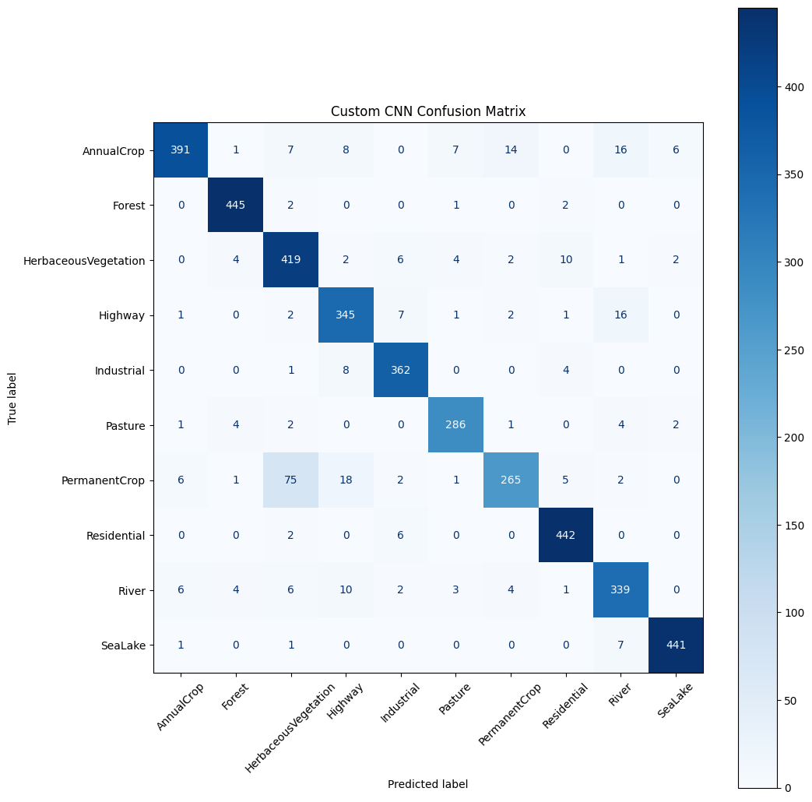

Final Results
Custom CNN Accuracy92.22%
Custom CNN F192.12%
ResNet18 Accuracy78.67%
Confusion Matrix

Main Finding
The custom CNN performed best. PermanentCrop was the most difficult class and was frequently confused with HerbaceousVegetation.